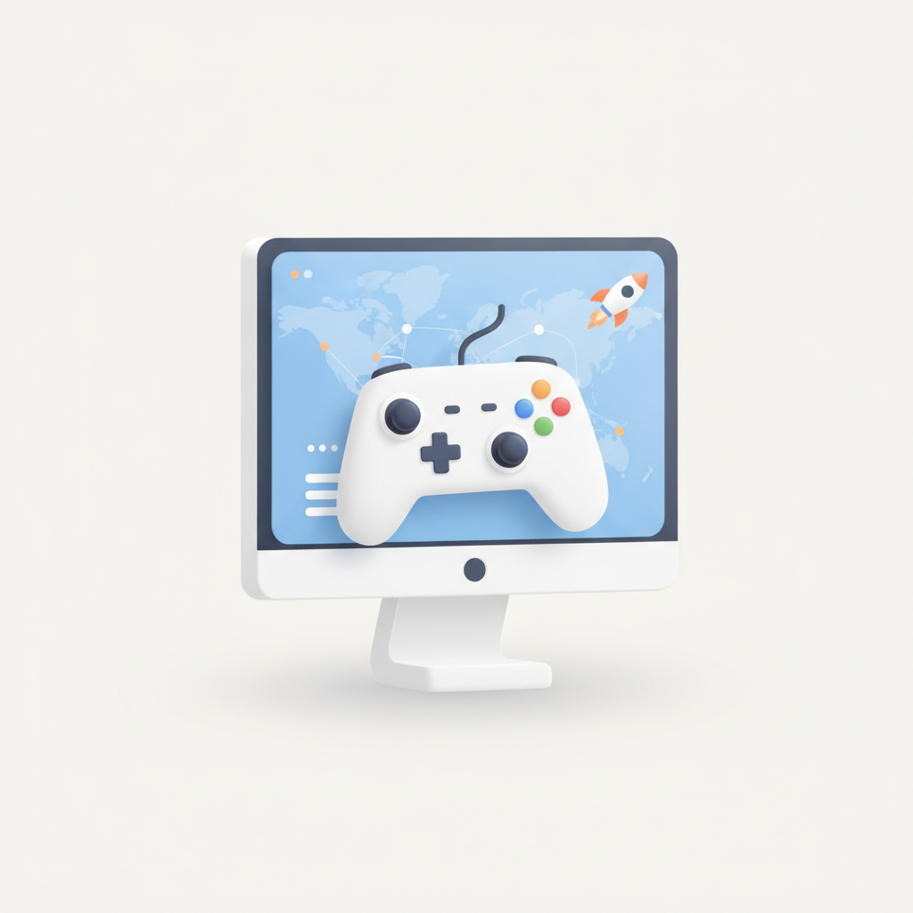
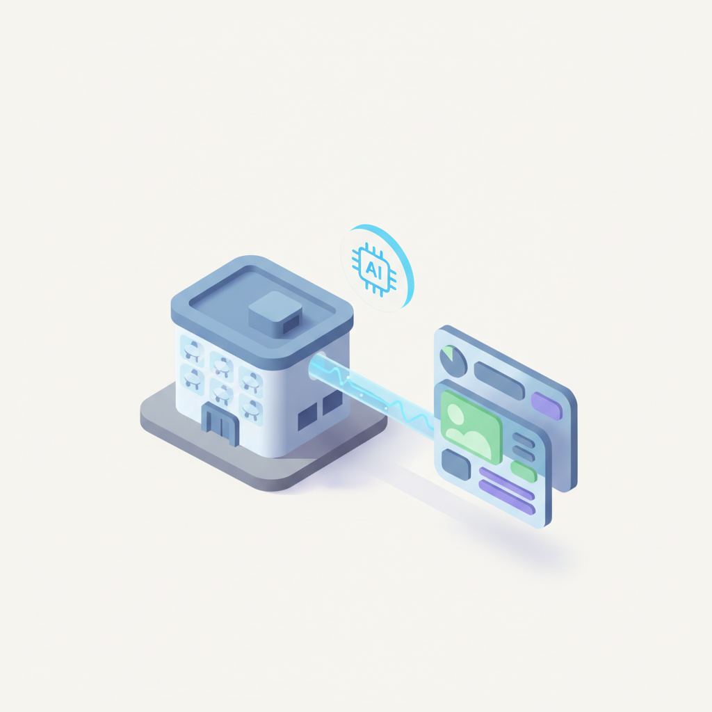
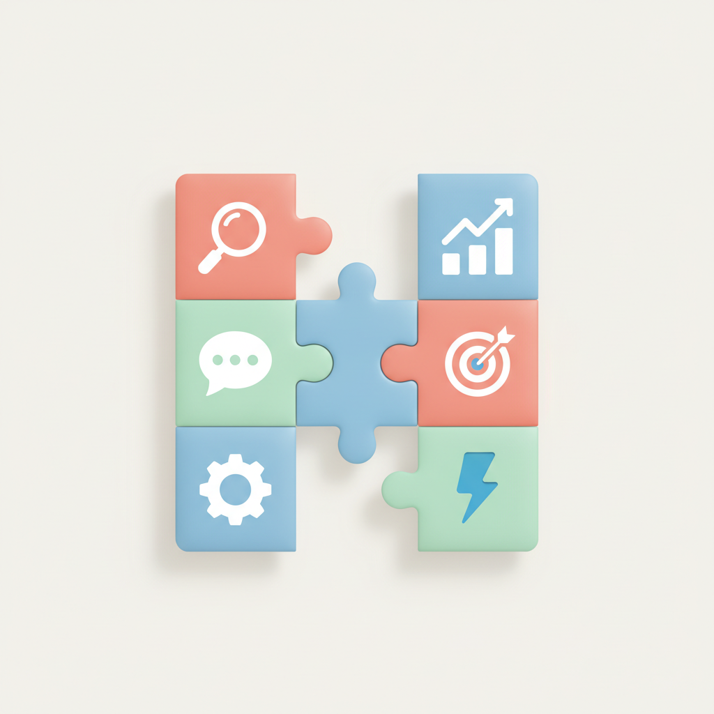
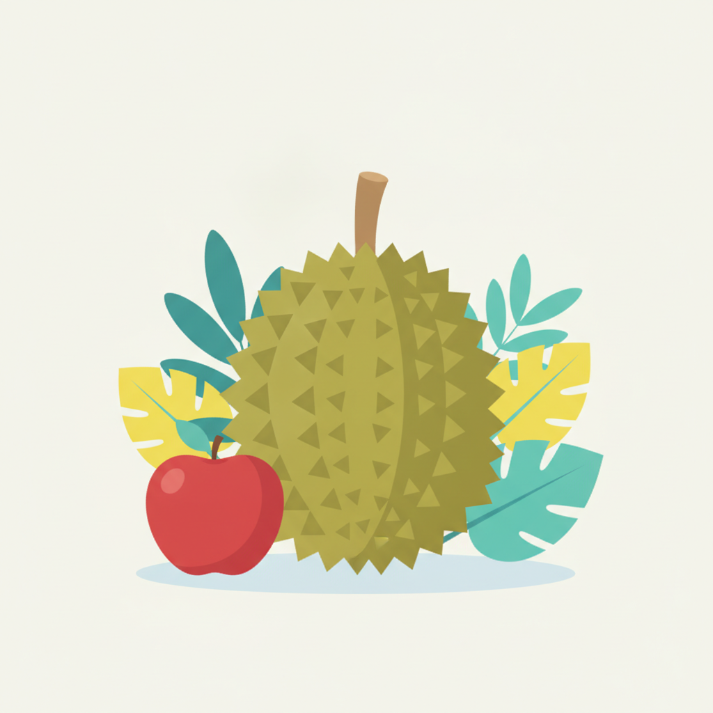
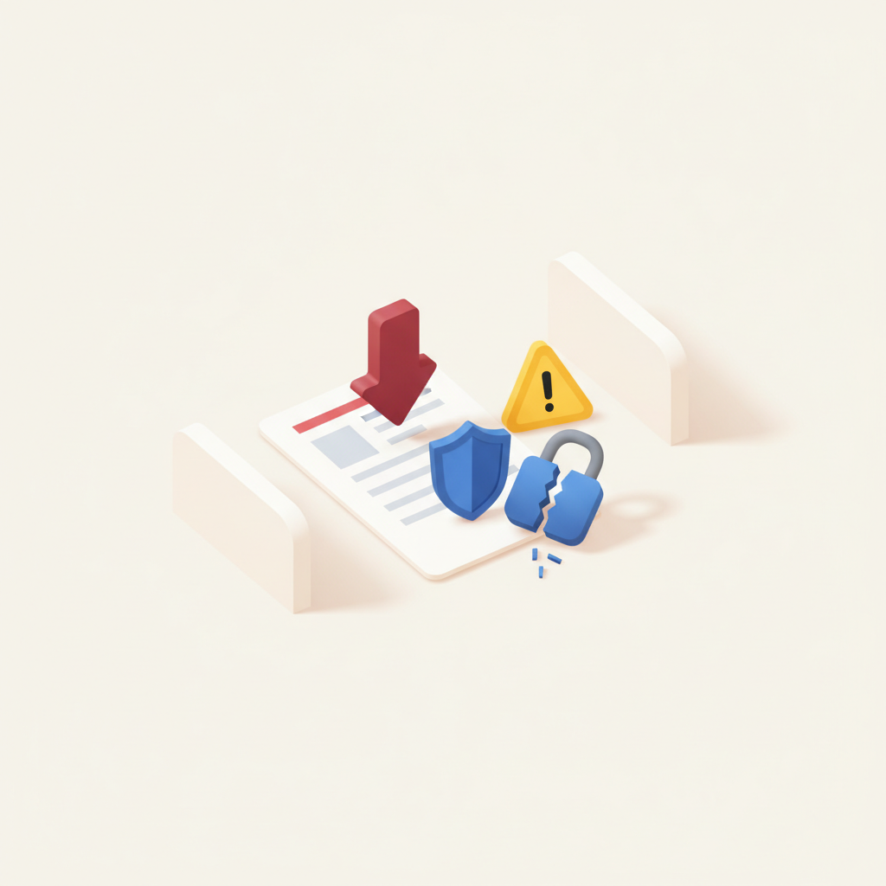
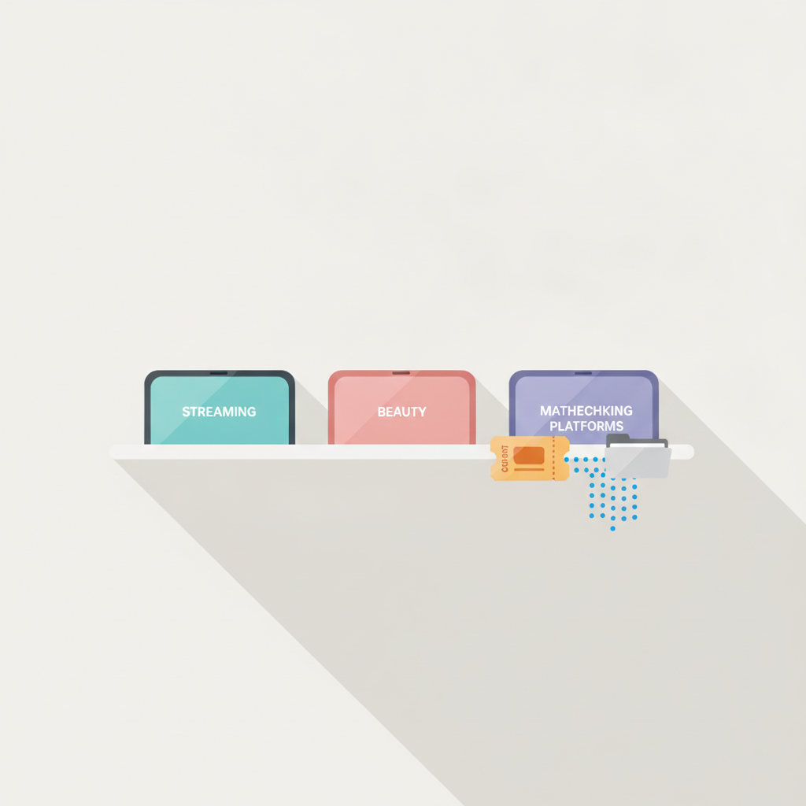
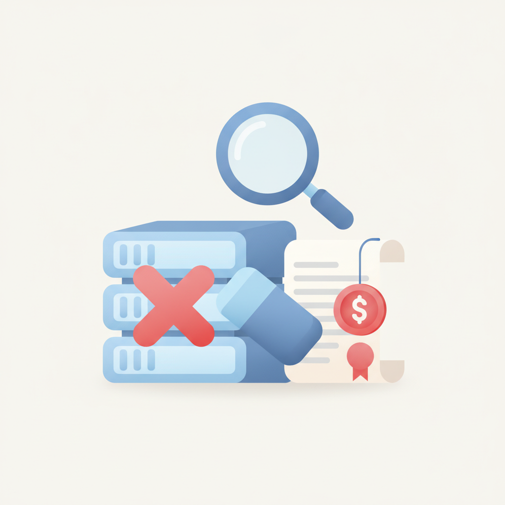
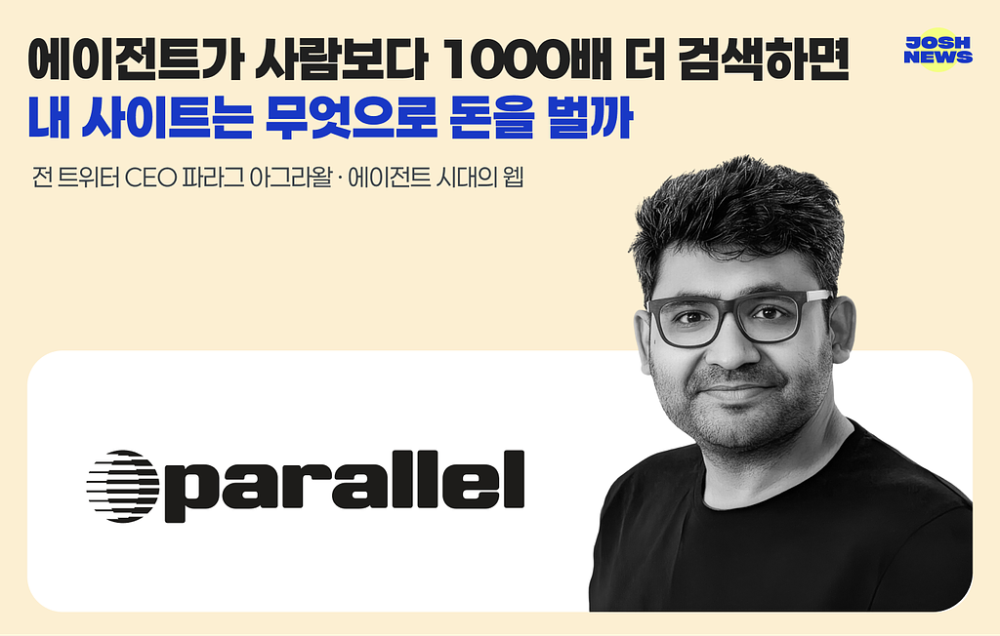

안녕하세요! 수요일 마케팅 소식 전해드립니다 😊 오늘은 빌더조쉬에서 전한 한 가지 질문이 오래 머릿속에 남습니다. "에이전트가 사람보다 1000배 더 검색한다면, 내 사이트는 무엇으로 돈을 벌까"라는 물음입니다. 전 트위터 CEO 파라그 아그라왈의 인터뷰를 바탕으로 한 이 토픽은, 웹의 주요 고객이 사람에서 AI 에이전트로 넘어갈 때 검색·광고·데이터 거래의 구조 자체가 어떻게 바뀌는지를 정면으로 다룹니다. 클릭도, 체류 시간도, 광고 노출도 기존 지표가 무의미해질 수 있는 상황에서, 브랜드와 퍼블리셔 모두 수익 모델을 처음부터 다시 설계해야 할 수 있습니다.
마케팅 업계 안에서도 AI 시대에 맞춘 구조 개편이 빠르게 이어지고 있습니다. TBWA코리아는 오늘 모듈형 마케팅 솔루션 'AIM by TBWA'를 론칭하며 변화하는 소비자 행동에 대응하는 브랜드 진단 체계를 내놓았고, 버슨 APAC의 제임스 켕 림 CD는 "안전한 사과 같은 캠페인 대신 과감하게 두리안이 되라"는 말로 로컬 크리에이티비티의 방향을 짚었습니다. 도구도, 전략도, 크리에이티브의 기준도 동시에 흔들리고 있는 국면입니다.
한 주의 중반, 오늘도 날카로운 인사이트와 함께 힘차게 달려가시길 바랍니다! 💡

1[ 매드타임스 최영호 기자] 코스닥 상장사 FSN(214270)의 자회사인 디지털 마케팅 전문기업 넥스트미디어그룹(이하 NMG)이 글로벌 PC·콘솔 마케팅 전문 어트리뷰션 기업 ‘게임사이트(Gamesight)’의 파트너 프로그램(Gamesight Partner Program) 공식 대행사로 선정됐다고 7일 밝혔다.PC 및 스팀(Steam) 게임 마케팅 영역에서 전문성을 쌓아온 NMG는 이번 파트너십을 통해 글로벌 대표 어트리뷰션 솔루션을 국내 게임사에 본격적으로 공급하고, 해외 진출을 준비하는 게임사에 한층 고도화된 통합 마케팅 서
›
2[ 매드타임스 최영호 기자] 전 세계 에이전틱 CRM 시장을 선도하고 있는 세일즈포스가 인스파이어 엔터테인먼트 리조트(이하 인스파이어)와 전략적 협력을 통해 MICE 사업 부문의 AI 전환(AX) 및 디지털 혁신을 추진한다고 밝혔다. 양사는 영업 데이터 통합부터 AI 기반 의사결정 체계 구축까지 단계적으로 협력하며, 호스피탈리티·MICE 산업의 새로운 B2B 영업 모델을 만들어 나갈 계획이다.이번 협력은 영업 현장에 축적된 경험과 정보를 기업의 데이터 자산으로 전환하고, 이를 실제 영업 전략과 성과 창출로 연결하는 데 초점을 맞췄다
›
3[ 매드타임스 채성숙 기자] 글로벌 독립광고회사 TBWA코리아(대표이사: 이수원)가 AI 시대의 변화하는 소비자 행동에 맞춰 브랜드를 진단하고, 필요한 마케팅 영역을 선택적으로 연결해 실행하는 모듈형 마케팅 솔루션 ‘AIM by TBWA’를 선보인다.AI의 확산으로 소비자가 브랜드와 제품 정보를 탐색하는 방식이 달라지고 있다. AI에게 직접 질문하고 답을 얻는 이른바 ‘제로 클릭(Zero Click)’ 방식이 확산되면서, AI 환경에서의 브랜드 인식과 실제 소비자의 탐색·선택 행동을 함께 살펴보는 마케팅 접근이 중요해지고 있다.AI
›
4[우즈베키스탄 타슈켄트=유다정 기자] "안전하고 달콤하며 누구에게나 사랑받는 사과 같은 캠페인을 만들려고 하지 마십시오. 과감하게 두리안이 되십시오" ― 제임스 켕 림(James Keng Lim) 버슨(Burson) APAC CD(크리에이티브 디렉터)우즈베키스탄의 수도 타슈켄트(toshkent)에서 열린 졸보르스 페스티벌(Jolbors Festival)에서 그는 글로벌 무대에서 경쟁하기 위해 로컬의 색깔을 지우기보다 오히려 더욱 선명하게 드러내야 한다고 강조했다.제임스 켕 림 CD는 싱가포르의 대표 과일인 '두리안'을
›
5정부가 범정부 정보보호 대책을 내놓은 지 1년이 지났지만, 해킹 사고는 여전히 반복되고 있다. 6일 열린 국회 과학기술정보방송통신위원회 국정감사에서는 부처 간 대응의 칸막이와 취약점 개선 지연이 지적이 잇따랐다. 제로 트러스트 예산이 줄고, AI 취약점 점검을 확대할 신규 예산이 정부안에 반영되지 않은 점도 도마에 오르면서, 의원들은 정부의 대책이 실제 사고 예방으로 이어지고 있는지를 따져 물었다.
›
6티빙과 강남언니, 듀오 등 최근 개인정보 유출 사고를 겪은 기업들이 국정감사에서 피해 보상과 재발 방지 대책을 추궁받았다. 민감한 정보의 유출 피해에 포인트·쿠폰 보상이 충분한지, 사고 전에 발견한 취약점과 외주업체·가맹점의 보안 위험을 제대로 관리했는지가 주요 쟁점이었다.
›
7정부가 지난해 발생한 LG유플러스의 침해사고 조사 과정에서 회사가 고의로 증거를 인멸하거나 조사를 방해한 사실이 수사로 확인되면 가입자 위약금 면제를 요구하겠다는 입장을 밝혔다. 6일 열린 국회 과학기술정보방송통신위원회(이하 과방위) 국정감사에서는 지난 침해 사고 당시 LG유플러스가 서버를 폐기하고 운영체제(OS)를 재설치하면서 침해 증거를 제대로 보존했는지를 놓고 공방이 벌어졌다. LG유플러스는 위약금 면제 여부에는 확답하지 않은 채 이용자 보호 조치를 검토하겠다고 답했다.
›
전 트위터 CEO 파라그 아그라왈 인터뷰 — 에이전트가 웹의 고객이 될 때 검색·광고·데이터 거래는 어떻게 달라지나
브랜드 진단부터 지금 당장 해야 할 우선순위까지,
30분 무료 상담에서 함께 정리해드려요.
이미 수십 개 브랜드가 상담받았습니다.
내 브랜드처럼, 함께 고민하는 팀원의 마음으로 봅니다.
스타트업 대표·마케팅 담당자를 위한 30분